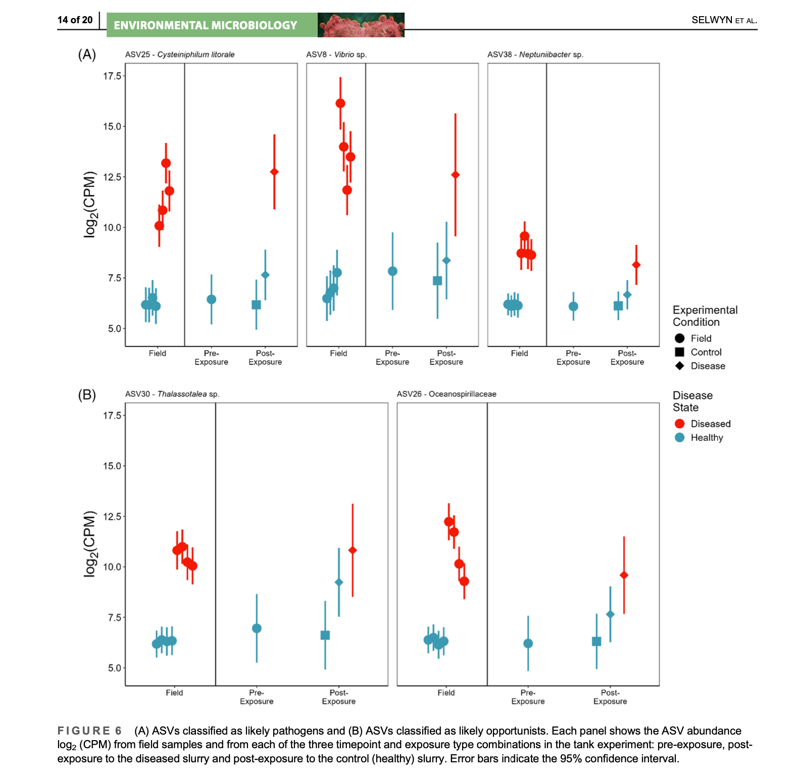

Throughout my academic and professional career, I’ve had the opportunity to contribute to impactful research and develop innovative projects. Below are some highlights of my work.
Published in *Environmental Microbiology*, this project focused on the use of machine learning techniques to identify putative bacterial pathogens affecting endangered Caribbean staghorn coral. By building highly accurate classifiers using 16S rDNA bacterial gene sequencing data, we achieved over 92% classification accuracy and contributed to coral conservation efforts.
A Natural Language Processing (NLP) pipeline designed to extract, preprocess, and categorize traffic violation reports from the Boston 311 API. By automating key issue identification such as bike lane obstructions, this project enhances urban planning and infrastructure management.
Developed a four-player chess AI using a custom Minimax algorithm with alpha-beta pruning, designed to compete against both random and experienced players. This project required the integration of game theory and advanced decision-making heuristics.